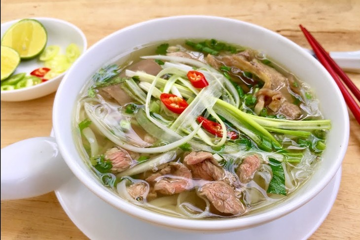

Home
Pho

Pho - Beef or Chicken noodle - The most famous Vietnamese dish
Experience the magic of one of the greatest noodle soups in the world
with this easy to follow traditional Vietnamese Pho recipe!
Made from scratch with the signature broth that’s light yet at the same time so full of flavour,
it’s infused with spices like cinnamon, star anise and cardamom. The soup is utterly addictive and every spoonful
leaves you wanting more!
What is Pho?
If you’re wondering “What is Pho?” then you’re probably also wondering “Why is she so bonkers over it???”
I don’t blame you. It looks like a relatively harmless bowl of beef noodle soup.
That is, until you take your first slurp.
The Pho soup broth is everything. It’s light yet full of flavour, deceptively beefy, savoury, complex, has the tiniest hint of richness and is filled with beautiful spices like cinnamon.
It is, without question, one of The Best Soups in the whole world!
Ingredient:
- Beef Soup Bones: Use the shank and knee to make the homemade bone broth.
- Rice Noodles: You should be able to find dry rice noodles at most grocery stores, either in the international aisle or another pantry aisle.
- Beef: This recipe calls for beef top sirloin. Make sure it's thinly sliced so the hot broth can cook it.
- Fish Sauce: Fish sauce will give the pho a hint of salty, fishy flavor.
- Onion: Roast the onions for an extra depth of flavor.
- Spices and Seasonings: This recipe calls for ginger, star anise, and salt.
- Garnishes: Garnish your pho with cilantro, green onion, Thai basil, lime, hoisin sauce, sriracha, or anything else you like.
Steps:
- Roast the beef bones and onions until the bones are browned and the onions are soft.
- Make the broth.
- Soak the rice noodles for an hour. Meanwhile, bring the broth to a simmer.
- Boi the noodles, then drain and add them to a bowl.
- Top with sirloin, cilantro, green onion, and broth. Garnish with your desired toppings.